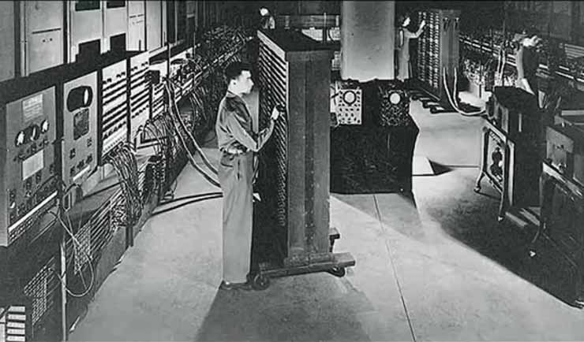
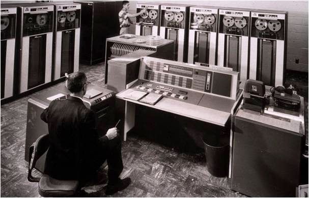
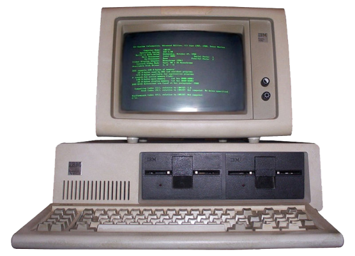
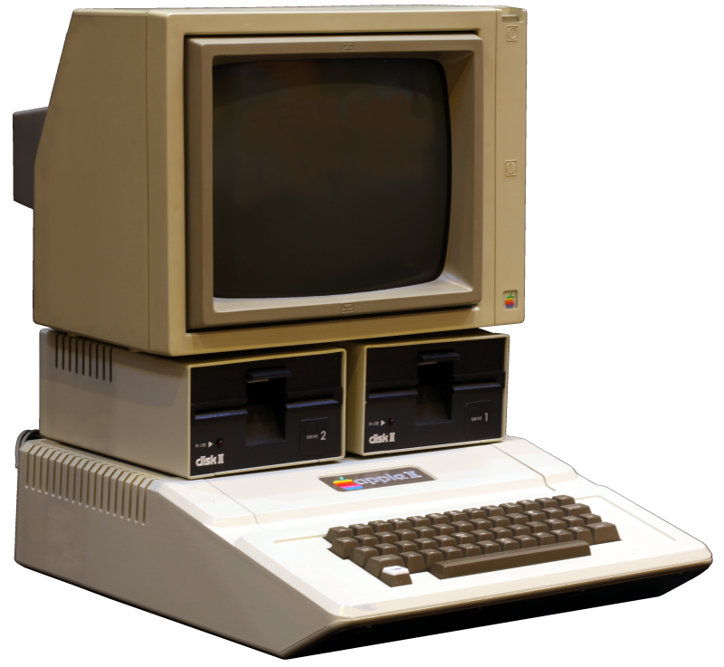
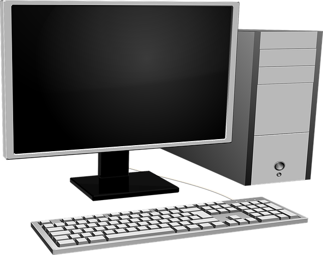

|
|
| CPU | RAM | MOTHERBOARD | GPU | PSU |
| FORM PEMBELIAN KOMPUTER DISINI!! |
|
Komputer pribadi, atau PC (personal computer), adalah perangkat elektronik yang dirancang untuk membantu pengguna melakukan berbagai tugas seperti pengolahan data, pembuatan dokumen, browsing internet, hingga bermain game. Komputer ini terdiri dari beberapa komponen utama seperti unit pemrosesan pusat (CPU), memori (RAM), perangkat penyimpanan (hard disk atau SSD), serta perangkat input dan output seperti keyboard, mouse, dan monitor. Sistem operasi yang diinstal di PC, seperti Windows, macOS, atau Linux, memungkinkan pengguna untuk menjalankan aplikasi dan program yang dibutuhkan. Dalam dunia modern, PC menjadi perangkat yang sangat penting di berbagai sektor, mulai dari pendidikan, bisnis, hingga hiburan. Kemampuan komputasi yang terus berkembang membuat komputer dapat menjalankan aplikasi yang semakin kompleks dan membutuhkan sumber daya tinggi. Selain itu, kemampuan komputer untuk terhubung ke jaringan internet memperluas fungsinya sebagai alat komunikasi dan sumber informasi global. Dengan harga yang semakin terjangkau, komputer menjadi semakin mudah diakses oleh masyarakat luas dan berperan besar dalam mendukung produktivitas serta inovasi di era digital. |

|
|

Komputer Generasi Pertama |

Komputer Generasi Kedua |

Komputer Generasi Ketiga |
|

Komputer Generasi Keempat |

Komputer Generasi Kelima |

Komputer Generasi Sekarang |